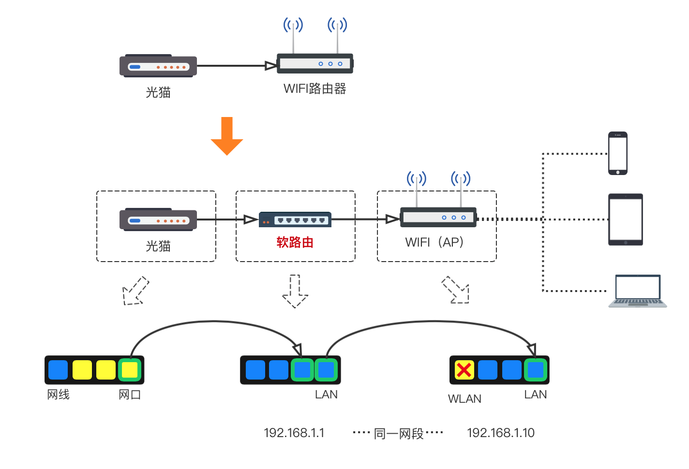
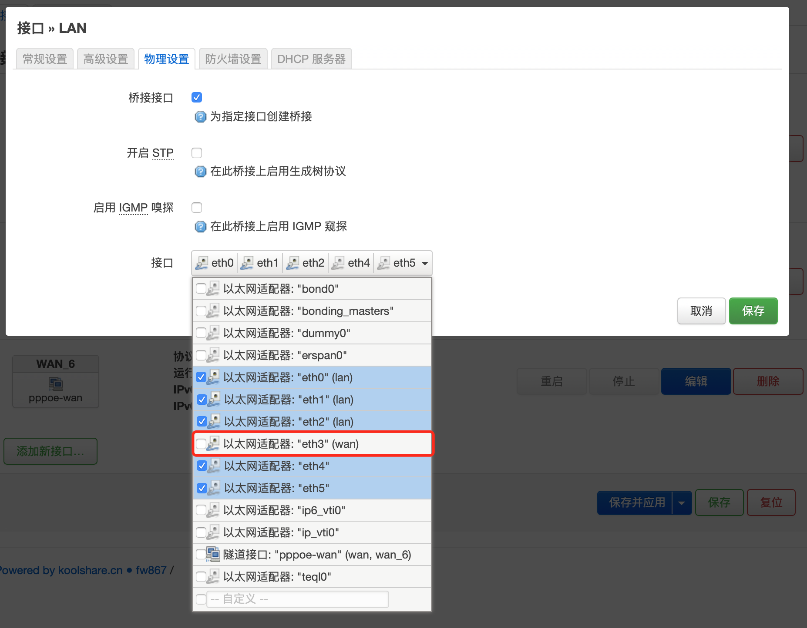
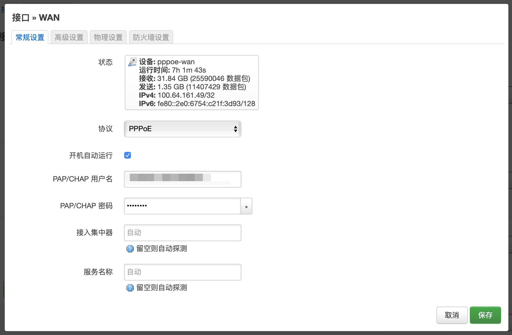
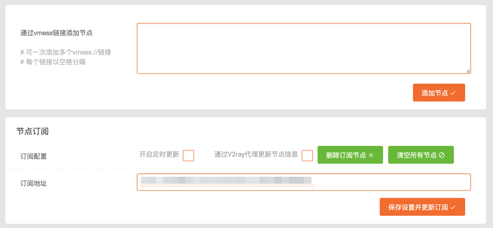
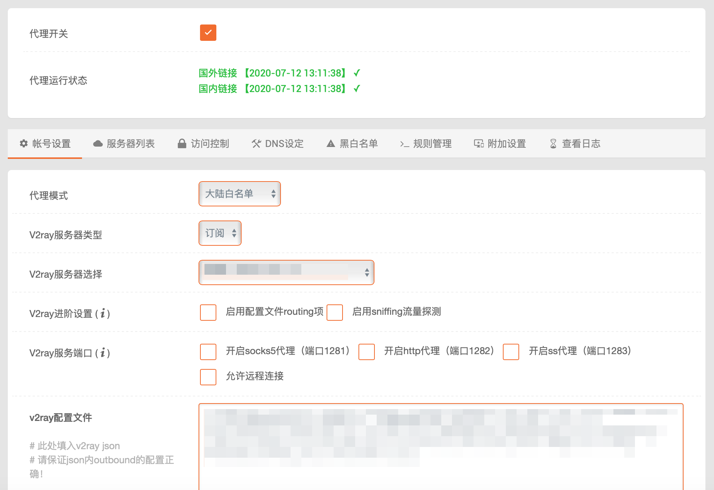
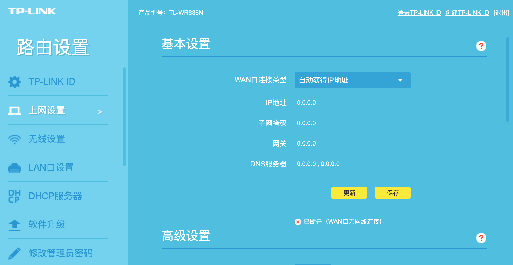
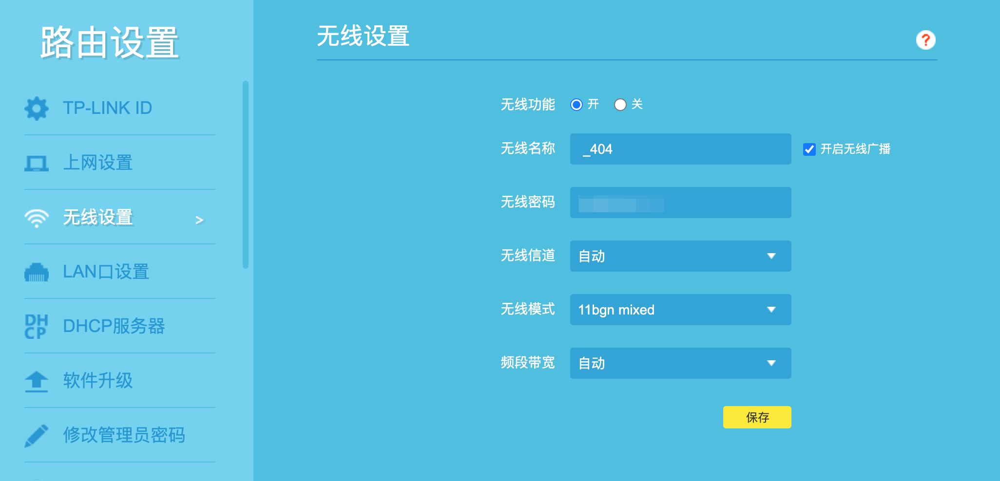
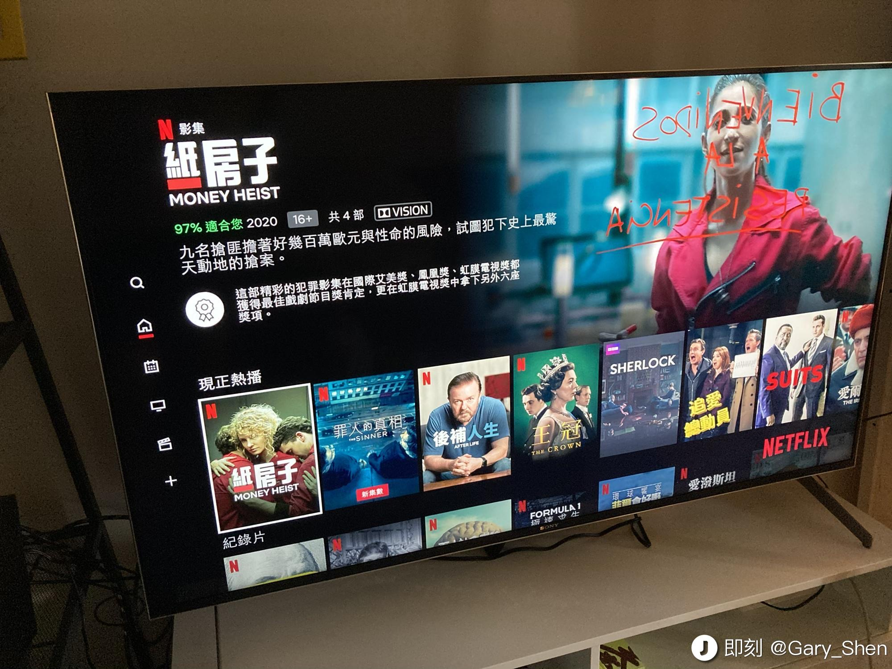

入手软路由，主要有下面几个原因：
- 买的科学上网vpn经常流量用不完；
- 手机常开小火箭（Shadowrocket）还是挺耗电的；
- 55寸索尼电视只用来玩游戏和看国产内容可惜了，想看Netflix和YouTube，毕竟精神地球人；
- 想开小型的轰趴，三五人观影玩乐。
折腾软路由主要目的还是实现最后两点。于是google找信息怎么实现路由器科学上网。在各种方式中选择了比较一劳永逸的方式：软路由（其实就是一台电脑主机）。
拓补图

1. 选购软路由硬件
某宝搜索”软路由“有很多选择。
油管有位博主有选购介绍：YouTube
我自己买的的3865U|8G|120G 目前跑一个Openwrt，没有虚拟机和自己跑的其他服务，性能很过剩。
一般人（比如我）不想麻烦自己装固件，建议找那些已经自带系统和固件的商家。
2. 配置Openwrt
此处的前提是LEDE/Openwrt已经装好。（不清楚怎么安装的话，此处有另一位油管博主视频介绍：YouTube）
2.1. 修改接口
网络 -> 接口 -> LAN -> 编辑 -> 物理设置，将其中一个ethx（以太网）接口取消勾选留作拨号WAN口（LAN1 -> eth0）

2.2. 拨号上网
网络 -> 接口 -> WAN -> 编辑 -> 常规设置

2.3. 安装V2Ray插件
我买的固件自带koolss，一个ss/ssr代理插件，不支持vmess协议。
此处的前提是软路由已经能正常上网。
酷软 -> 未安装，找到V2Ray。
没有的话则需要离线安装。
从github下载离线包v2ray，安装时日志如果提示“含非法关键词”而安装失败，则需要通过ssh客户端（Mac自带终端，Windows MobaXterm）登录到路由系统，输入下列命令行并回车：
sed -i 's/\tdetect_package/\t# detect_package/g' /koolshare/scripts/ks_tar_install.sh |
回到管理后台继续离线安装。安装完毕后界面如下：
2.4. 配置V2Ray插件
打开代理开关，选择“服务器列表”：

根据自己的vpn情况，填入配置保存。
保存后再回到“账户设置”，我的配置如下：

代理模式一般“大陆白名单”即可，其他模式还没用过，玩游戏的可以试试“游戏模式”。服务器类型根据刚刚配置的服务类型，如果填的是“订阅”链接，则选择“订阅”；其他选择“自建”。v2ray配置文件不用修改。
填写完后“提交”。
3. 配置无线WIFI
这里要将家里现有的无线路由器变成一个无线AP。
⚠️ 一定要将网线接在LAN口，不要在WAN口，否则不能配置在一个网段。
我用的是TP-link TL-WR886N
网线连接接口在拓扑图中有体现
- 重置无线路由器;
- WAN口设置，因为WAN口没有接网线，这里的配置没有效果，改成“自动获取IP地址”，其他不填然后保存。
 - 无线设置中，打开“无线功能”

- LAN口设置，ip设为手动，假设软路由的地址是
192.168.1.1，那么这里的ip设为192.168.1.x，x为1-255的数字。

- 关闭DHCP服务器，目的是使用软路由的DHCP服务器分配ip地址。
到这里基本上无线AP设置完成。
用手机或电脑连配置好的wifi。检查是否能上网。

参考资料：
2019软路由推荐/科学上网软路由选购/ESXI下LEDE软路由v2ray科学上网速度测试（ESXI/LEDE/V2ray）
教你解锁软路由/安装LEDE软路由/一键安装软路由/手把手教你搭建自己的软路由入门设置(路由/软路由/软路由翻墙/软路由科学上网)
【完结】